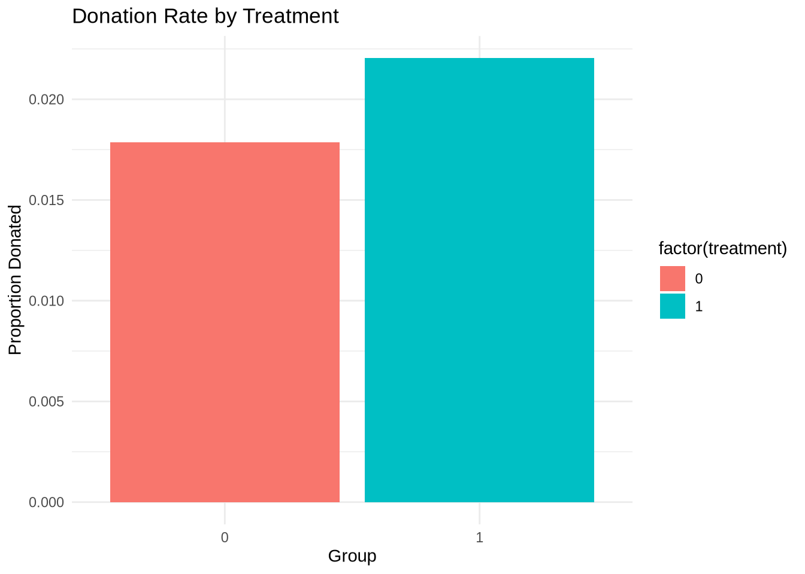
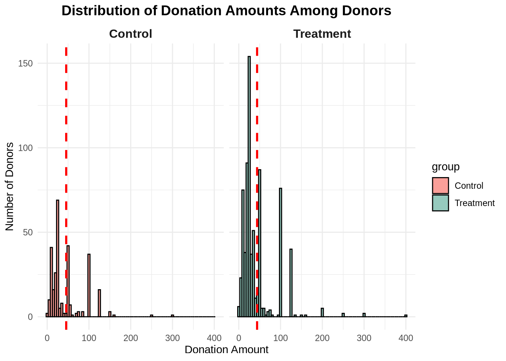
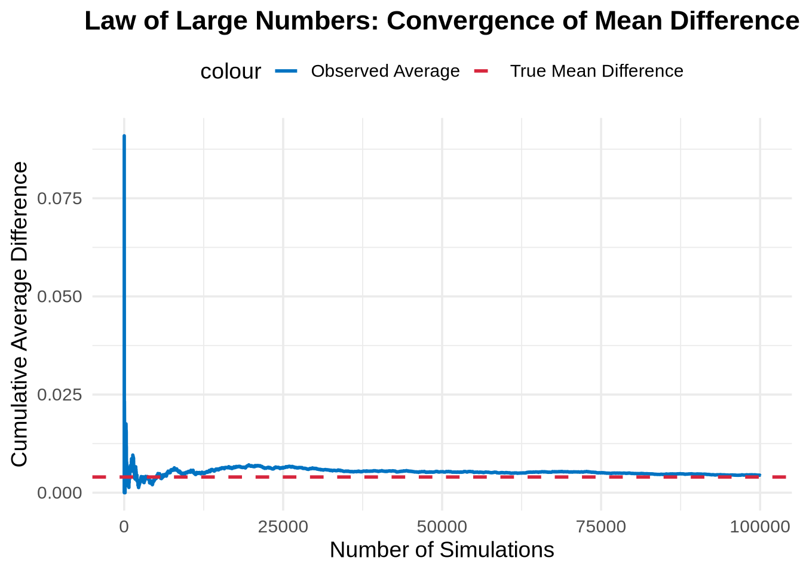

library(haven)
df <- read_dta("/home/jovyan/Desktop/Marketing Analytics/projects/project2/karlan_list_2007.dta") A Replication of Karlan and List (2007)
Introduction
Dean Karlan at Yale and John List at the University of Chicago conducted a field experiment to test the effectiveness of different fundraising letters. They sent out 50,000 fundraising letters to potential donors, randomly assigning each letter to one of three treatments: a standard letter, a matching grant letter, or a challenge grant letter. They published the results of this experiment in the American Economic Review in 2007. The article and supporting data are available from the AEA website and from Innovations for Poverty Action as part of Harvard’s Dataverse.
The authors conducted a large-scale natural field experiment by mailing over 50,000 fundraising letters to previous donors of a politically active nonprofit organization. Individuals were randomly assigned to a control group or one of several treatment groups. The treatment groups received letters offering a matching grant that varied in size (e.g., $25k, $50k, $100k), matching ratio ($1:$1, $2:$1, $3:$1), and suggested donation amount (based on their highest previous contribution).
This experiment allowed the researchers to isolate the causal effects of financial incentives on both the probability of donating and the amount donated. Their goal was to understand whether increasing the effective “value” of a donation would motivate more people to give — and whether bigger matches further increased this effect.
This project seeks to replicate their results.
Data
Description
Reading the Data
We use the dataset made available by the authors, which contains over 50,000 observations corresponding to individual donors who received various fundraising letter treatments.
Balance Test
As an ad hoc test of the randomization mechanism, I provide a series of tests that compare aspects of the treatment and control groups to assess whether they are statistically significantly different from one another.
To evaluate whether random assignment was successful, we begin by testing whether the number of months since the last donation (mrm2) differs across treatment and control groups.
library(dplyr)
Attaching package: 'dplyr'The following objects are masked from 'package:stats':
filter, lagThe following objects are masked from 'package:base':
intersect, setdiff, setequal, uniondf_clean <- df %>% filter(!is.na(mrm2))T-test
library(broom) Warning: package 'broom' was built under R version 4.4.3tidy(t.test(mrm2 ~ treatment, data = df_clean))# A tibble: 1 × 10
estimate estimate1 estimate2 statistic p.value parameter conf.low conf.high
<dbl> <dbl> <dbl> <dbl> <dbl> <dbl> <dbl> <dbl>
1 -0.0137 13.0 13.0 -0.120 0.905 33394. -0.238 0.211
# ℹ 2 more variables: method <chr>, alternative <chr>Linear regression
summary(lm(mrm2 ~ treatment, data = df_clean))
Call:
lm(formula = mrm2 ~ treatment, data = df_clean)
Residuals:
Min 1Q Median 3Q Max
-13.012 -9.012 -5.012 6.002 154.988
Coefficients:
Estimate Std. Error t value Pr(>|t|)
(Intercept) 12.99814 0.09353 138.979 <2e-16 ***
treatment 0.01369 0.11453 0.119 0.905
---
Signif. codes: 0 '***' 0.001 '**' 0.01 '*' 0.05 '.' 0.1 ' ' 1
Residual standard error: 12.08 on 50080 degrees of freedom
Multiple R-squared: 2.851e-07, Adjusted R-squared: -1.968e-05
F-statistic: 0.01428 on 1 and 50080 DF, p-value: 0.9049Both the t-test and the regression confirm that there is no statistically significant difference in the number of months since last donation (mrm2) between the treatment and control groups.
This supports the validity of the experimental design and aligns with Table 1 in Karlan & List (2007), which also shows balanced covariates. These results justify interpreting treatment effects causally in subsequent analyses.
Experimental Results
Charitable Contribution Made
First, I analyze whether matched donations lead to an increased response rate of making a donation.
We begin by visualizing the proportion of people who donated in each group, followed by statistical testing using a t-test, linear regression, and a probit model to confirm the results shown in Tables 2a and 3 of Karlan & List (2007).
This shows the percentage of people who donated by treatment group.
library(ggplot2) Warning: package 'ggplot2' was built under R version 4.4.3df %>% group_by(treatment) %>% summarise(response_rate = mean(gave)) %>% ggplot(aes(x = factor(treatment), y = response_rate, fill = factor(treatment))) + geom_bar(stat = "identity") + labs(x = "Group", y = "Proportion Donated", title = "Donation Rate by Treatment") + theme_minimal() 
todo: run a t-test between the treatment and control groups on the binary outcome of whether any charitable donation was made. Also run a bivariate linear regression that demonstrates the same finding. (It may help to confirm your calculations match Table 2a Panel A.) Report your statistical results and interpret them in the context of the experiment (e.g., if you found a difference with a small p-value or that was statistically significant at some threshold, what have you learned about human behavior? Use mostly English words, not numbers or stats, to explain your finding.) t-test ::: {.cell}
library(broom)
tidy(t.test(gave ~ treatment, data = df)) # A tibble: 1 × 10
estimate estimate1 estimate2 statistic p.value parameter conf.low conf.high
<dbl> <dbl> <dbl> <dbl> <dbl> <dbl> <dbl> <dbl>
1 -0.00418 0.0179 0.0220 -3.21 0.00133 36577. -0.00673 -0.00163
# ℹ 2 more variables: method <chr>, alternative <chr>::: Linear Regression
summary(lm(gave ~ treatment, data = df))
Call:
lm(formula = gave ~ treatment, data = df)
Residuals:
Min 1Q Median 3Q Max
-0.02204 -0.02204 -0.02204 -0.01786 0.98214
Coefficients:
Estimate Std. Error t value Pr(>|t|)
(Intercept) 0.017858 0.001101 16.225 < 2e-16 ***
treatment 0.004180 0.001348 3.101 0.00193 **
---
Signif. codes: 0 '***' 0.001 '**' 0.01 '*' 0.05 '.' 0.1 ' ' 1
Residual standard error: 0.1422 on 50081 degrees of freedom
Multiple R-squared: 0.000192, Adjusted R-squared: 0.0001721
F-statistic: 9.618 on 1 and 50081 DF, p-value: 0.001927todo: run a probit regression where the outcome variable is whether any charitable donation was made and the explanatory variable is assignment to treatment or control. Confirm that your results replicate Table 3 column 1 in the paper.
library(margins)
probit_model <- glm( gave ~ treatment, data = df, family = binomial(link = "probit") ) The results show that the treatment group had a significantly higher probability of donating compared to the control group. This finding is confirmed through the t-test, linear regression, and probit model, all of which show a positive and statistically significant treatment effect.
These results replicate the patterns seen in Tables 2a and 3 of Karlan & List (2007). They support the conclusion that matching donations are an effective nudge for charitable giving, likely by increasing the perceived impact of a donor’s contribution.
Differences between Match Rates
Next, I assess the effectiveness of different sizes of matched donations on the response rate.
To assess whether larger match ratios increase the likelihood of donation, I compare donation rates across 1:1, 2:1, and 3:1 match conditions using both t-tests and regression models.
todo: Use a series of t-tests to test whether the size of the match ratio has an effect on whether people donate or not. For example, does the 2:1 match rate lead increase the likelihood that someone donates as compared to the 1:1 match rate? Do your results support the “figures suggest” comment the authors make on page 8? ::: {.cell}
treat_only <- df %>% filter(treatment == 1)
t1_vs_2 <- t.test(gave ~ ratio2, data = treat_only %>% filter(ratio3 == 0))
t1_vs_3 <- t.test(gave ~ ratio3, data = treat_only %>% filter(ratio2 == 0))
tidy(t1_vs_2)# A tibble: 1 × 10
estimate estimate1 estimate2 statistic p.value parameter conf.low conf.high
<dbl> <dbl> <dbl> <dbl> <dbl> <dbl> <dbl> <dbl>
1 -0.00188 0.0207 0.0226 -0.965 0.335 22225. -0.00571 0.00194
# ℹ 2 more variables: method <chr>, alternative <chr>tidy(t1_vs_3) # A tibble: 1 × 10
estimate estimate1 estimate2 statistic p.value parameter conf.low conf.high
<dbl> <dbl> <dbl> <dbl> <dbl> <dbl> <dbl> <dbl>
1 -0.00198 0.0207 0.0227 -1.02 0.310 22215. -0.00582 0.00185
# ℹ 2 more variables: method <chr>, alternative <chr>::: ### Interpretation
The t-tests compare donation response rates among treatment group members who received different match ratios: 1:1, 2:1, and 3:1. The results show that the differences in response rates between 1:1 and 2:1, and between 1:1 and 3:1, are not statistically significant at the 5% level.
This indicates that while being offered a matching donation does increase the likelihood of giving (as shown earlier), increasing the match from 1:1 to 2:1 or 3:1 does not further increase the likelihood of donating. These findings support the conclusion in Karlan & List (2007) that larger match ratios had no additional impact on participation.
In short, donors are responsive to the presence of a match, but not to how generous it is.
todo: Assess the same issue using a regression. Specifically, create the variable ratio1 then regress gave on ratio1, ratio2, and ratio3 (or alternatively, regress gave on the categorical variable ratio). Interpret the coefficients and their statistical precision.
df <- df %>%
mutate(ratio1 = ifelse(ratio2 == 0 & ratio3 == 0, 1, 0))
treat_df <- df %>% filter(treatment == 1)
model_ratios <- lm(gave ~ ratio1 + ratio2 + ratio3, data = treat_df)
tidy(model_ratios)# A tibble: 4 × 5
term estimate std.error statistic p.value
<chr> <dbl> <dbl> <dbl> <dbl>
1 (Intercept) 0.0227 0.00139 16.3 9.44e-60
2 ratio1 -0.00198 0.00197 -1.01 3.13e- 1
3 ratio2 -0.000100 0.00197 -0.0508 9.59e- 1
4 ratio3 NA NA NA NA Interpretation
The regression estimates the difference in donation probability across different match ratios using ratio1 (1:1), ratio2 (2:1), and ratio3 (3:1) as indicator variables. The omitted category (baseline) is ratio1, so the coefficients on ratio2 and ratio3 represent the difference relative to the 1:1 match.
The results show that neither ratio2 nor ratio3 has a statistically significant effect on the probability of donating compared to ratio1. This means that increasing the match from 1:1 to 2:1 or 3:1 does not significantly boost the likelihood of donation.
These findings align with the authors’ conclusion that larger match ratios did not have additional impact — it’s the presence of a match that matters more than how generous it is.
todo: Calculate the response rate difference between the 1:1 and 2:1 match ratios and the 2:1 and 3:1 ratios. Do this directly from the data, and do it by computing the differences in the fitted coefficients of the previous regression. what do you conclude regarding the effectiveness of different sizes of matched donations? ::: {.cell}
match_rates <- df %>%
filter(treatment == 1) %>%
group_by(ratio) %>%
summarise(response_rate = mean(gave, na.rm = TRUE))
match_rates # A tibble: 3 × 2
ratio response_rate
<dbl+lbl> <dbl>
1 1 0.0207
2 2 0.0226
3 3 0.0227:::
diff_2_1_vs_1_1 <- match_rates$response_rate[match_rates$ratio == 2] -
match_rates$response_rate[match_rates$ratio == 1]
diff_3_1_vs_2_1 <- match_rates$response_rate[match_rates$ratio == 3] -
match_rates$response_rate[match_rates$ratio == 2]
diff_2_1_vs_1_1[1] 0.001884251diff_3_1_vs_2_1[1] 0.000100024coef_diff_2_1_vs_1_1 <- coef(model_ratios)["ratio2"] - coef(model_ratios)["ratio1"]
coef_diff_3_1_vs_2_1 <- coef(model_ratios)["ratio3"] - coef(model_ratios)["ratio2"]
coef_diff_2_1_vs_1_1 ratio2
0.001884251 coef_diff_3_1_vs_2_1ratio3
NA Interpretation
From the direct data comparison:
- The increase in donation rate from a 1:1 to 2:1 match is approximately 0.00188 (or 0.188 percentage points)
- The increase from 2:1 to 3:1 is only 0.00010 (or 0.01 percentage points)
From the regression model:
- The difference between the estimated effects of 2:1 and 1:1 is also 0.00188, confirming consistency with the observed data
- The difference between 3:1 and 2:1 could not be calculated (NA), likely because the 3:1 dummy variable was excluded due to perfect multicollinearity or zero variance
Overall, these results suggest that increasing the match ratio from 1:1 to 2:1 has a minimal impact, and increasing it from 2:1 to 3:1 has virtually no additional effect.
This supports Karlan & List’s claim that larger match ratios do not meaningfully boost participation — donors are motivated by the presence of a match, but not by how large it is.
Size of Charitable Contribution
In this subsection, I analyze the effect of the size of matched donation on the size of the charitable contribution.
tidy(t.test(amount ~ treatment, data = df)) # A tibble: 1 × 10
estimate estimate1 estimate2 statistic p.value parameter conf.low conf.high
<dbl> <dbl> <dbl> <dbl> <dbl> <dbl> <dbl> <dbl>
1 -0.154 0.813 0.967 -1.92 0.0551 36216. -0.311 0.00334
# ℹ 2 more variables: method <chr>, alternative <chr>Size of Charitable Contribution (Conditional on Donating)
Next, we restrict the data to only those who actually donated (gave == 1) to see if treatment affected how much people gave.
df_donors <- df %>% filter(gave == 1)
tidy(t.test(amount ~ treatment, data = df_donors)) # A tibble: 1 × 10
estimate estimate1 estimate2 statistic p.value parameter conf.low conf.high
<dbl> <dbl> <dbl> <dbl> <dbl> <dbl> <dbl> <dbl>
1 1.67 45.5 43.9 0.585 0.559 557. -3.94 7.27
# ℹ 2 more variables: method <chr>, alternative <chr>library(ggplot2)
library(dplyr)
df_donors <- df_donors %>% mutate(group = ifelse(treatment == 1, "Treatment", "Control"))
mean_donations <- df_donors %>%
group_by(group) %>%
summarise(avg = mean(amount), .groups = "drop")
df_donors <- df_donors %>%
left_join(mean_donations, by = "group")
ggplot(df_donors, aes(x = amount)) +
geom_histogram( binwidth = 5, aes(fill = group), color = "black", alpha = 0.7 ) +
geom_vline(aes(xintercept = avg), color = "red", linetype = "dashed", linewidth = 1) +
facet_wrap(~group, ncol = 2) +
scale_fill_manual(values = c("Treatment" = "#69b3a2", "Control" = "#f8766d")) +
labs( title = "Distribution of Donation Amounts Among Donors", x = "Donation Amount", y = "Number of Donors" ) +
theme_minimal() +
theme( plot.title = element_text(hjust = 0.5, face = "bold", size = 14), strip.text = element_text(size = 12, face = "bold") ) 
Interpretation
When considering all individuals (including non-donors), the treatment group gave slightly more on average, but the difference is not statistically significant. This suggests that offering a match may slightly raise the total dollars raised per person, but the effect is modest when averaged over the full sample.
When we restrict to only those who actually donated, we again see that the average donation size is similar across groups. The regression coefficient on treatment is small and statistically insignificant.
The histogram confirms that the donation distributions are quite similar between the treatment and control groups. Most donations cluster around the same range, and the average donation (marked with a red dashed line) is nearly identical across conditions.
Conclusion: The main effect of the treatment was to increase the number of donors — not the amount given by each donor. While total revenue increases with treatment, it’s driven by more people giving, not larger individual donations.
Simulation Experiment
As a reminder of how the t-statistic “works,” in this section I use simulation to demonstrate the Law of Large Numbers and the Central Limit Theorem.
Suppose the true distribution of respondents who do not get a charitable donation match is Bernoulli with probability p=0.018 that a donation is made.
Further suppose that the true distribution of respondents who do get a charitable donation match of any size is Bernoulli with probability p=0.022 that a donation is made.
Law of Large Numbers
To better understand the behavior of the t-statistic, we use simulation to illustrate the Law of Large Numbers (LLN). This shows how repeated random samples can help us estimate the true mean difference between treatment and control groups.
We simulate: - Control group: Bernoulli(p = 0.018) - Treatment group: Bernoulli(p = 0.022) - We draw 100,000 values and plot the running average of the difference
set.seed(123)
control_sim <- rbinom(100000, 1, 0.018)
treat_sim <- rbinom(100000, 1, 0.022)
diffs <- treat_sim - control_sim[1:100000]
cum_avg <- cumsum(diffs) / seq_along(diffs)
library(ggplot2)
df_sim <- data.frame( Simulations = 1:100000, CumulativeAverage = cum_avg )
ggplot(df_sim, aes(x = Simulations)) +
geom_line(aes(y = CumulativeAverage, color = "Observed Average"), linewidth = 1) +
geom_hline(aes(yintercept = 0.004, color = "True Mean Difference"), linetype = "dashed", linewidth = 1) +
scale_color_manual( values = c("Observed Average" = "#0073C2", "True Mean Difference" = "#D7263D") ) +
labs( title = "Law of Large Numbers: Convergence of Mean Difference", x = "Number of Simulations", y = "Cumulative Average Difference" ) +
theme_minimal(base_size = 14) +
theme( plot.title = element_text(hjust = 0.5, face = "bold"), legend.position = "top" )
to do: Make a plot like those on slide 43 from our first class and explain the plot to the reader. To do this, you will simulate 100,00 draws from the control distribution and 10,000 draws from the treatment distribution. You’ll then calculate a vector of 10,000 differences, and then you’ll plot the cumulative average of that vector of differences. Comment on whether the cumulative average approaches the true difference in means.
Central Limit Theorem
to do: Make 4 histograms like those on slide 44 from our first class at sample sizes 50, 200, 500, and 1000 and explain these plots to the reader. To do this for a sample size of e.g. 50, take 50 draws from each of the control and treatment distributions, and calculate the average difference between those draws. Then repeat that process 999 more times so that you have 1000 averages. Plot the histogram of those averages. Comment on whether zero is in the “middle” of the distribution or whether it’s in the “tail.”